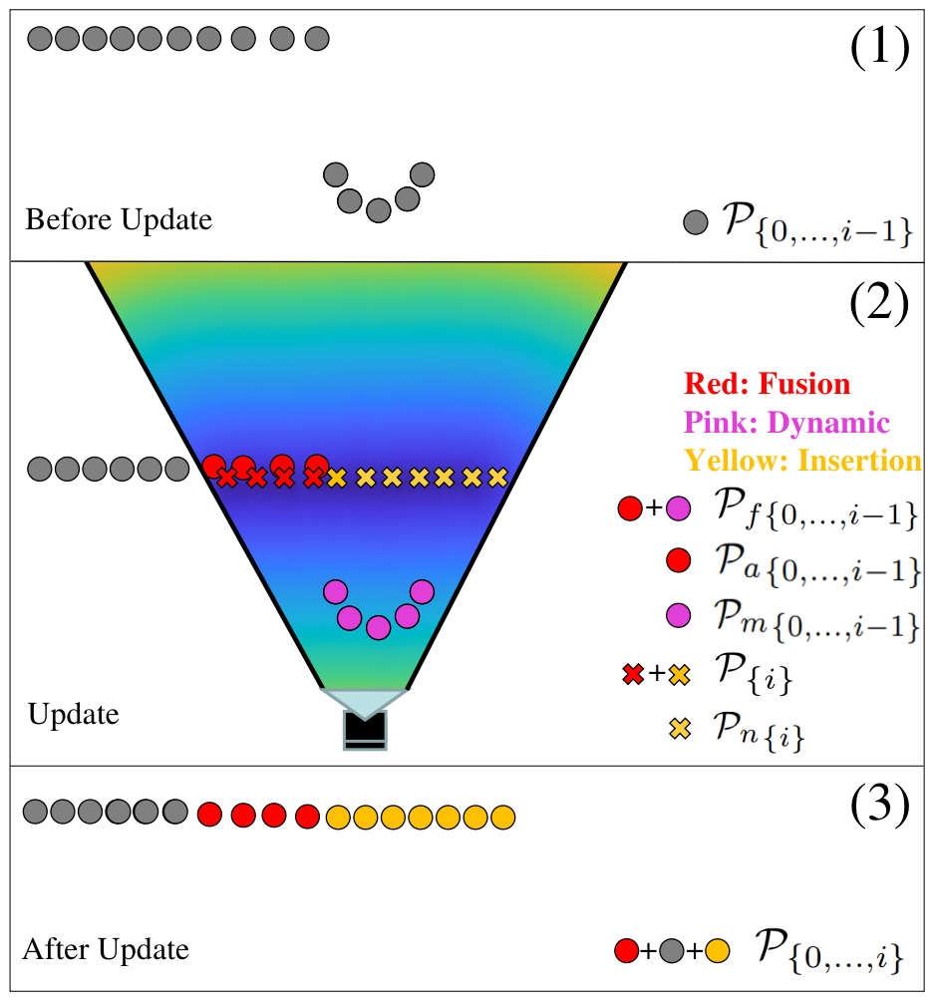

Human-robot collaborative applications require scene representations that are kept up-to-date and facilitate safe motions in dynamic scenes. In this letter, we present an interactive distance field mapping and planning (IDMP) framework that handles dynamic objects and collision avoidance through an efficient representation. We define interactive mapping and planning as the process of creating and updating the representation of the scene online while simultaneously planning and adapting the robot's actions based on that representation. Given depth sensor data, our framework builds a continuous field that allows to query the distance and gradient to the closest obstacle at any required position in 3D space. The key aspect of this work is an efficient Gaussian Process field that performs incremental updates and implicitly handles dynamic objects with a simple and elegant formulation based on a temporary latent model. In terms of mapping, IDMP is able to fuse point cloud data from single and multiple sensors, query the free space at any spatial resolution, and deal with moving objects without semantics. In terms of planning, IDMP allows seamless integration with gradient-based motion planners facilitating fast re-planning for collision-free navigation. The framework is evaluated on both real and synthetic datasets. A comparison with similar state-of-the-art frameworks shows superior performance when handling dynamic objects and comparable or better performance in the accuracy of the computed distance and gradient field. Finally, we show how the framework can be used for fast motion planning in the presence of moving objects. An accompanying video, code, and datasets are made publicly available.
Proposed Framework
Given a pointcloud and the corresponding sensor pose, we propose a framework that first models a temporary latent Frustum Field (blue) using only P{i} as training points. All prior training points P{0,...,i−1} in the Fused Field (yellow) are then passed to the Frustum Field. Given the sensor pose, the Frustum Field selects from P{0,...,i−1} the points that are within the frustum area Pf{0,...,i−1} and returns the inferred values of d̂f , ∇d̂f to the Fused Field. These distances and gradients are used to perform fusion and dynamic update by updating the training points that model the Fused Field. The path planner then queries for d̂o, ∇d̂o in order to compute and adapt its motion plans in response to a changing map
Datasets
To evaluate our proposed framework, we quantitatively compare the mapping performance for both static and dynamic scenes with other frameworks. For static incrementally built scene we use the Cow and Lady dataset. For a dynamic scene, we have created our own Gazebo simulation dataset.
Quantitative Results
We compare IDMP to the two state-of-the-art algorithms: FIESTA and Voxblox. To compare IDMP’s distance field accuracy to Voxblox and FIESTA, we compute the RMSE for each framework. We vary the spatial: For Voxblox/FIESTA, it corresponds to the voxel size. For IDMP, we query at a regular grid that corresponds to the centre of each voxel. The accuracy for Voxblox and FIESTA decreases with increasing spatial resolution. In contrast, IDMP’s accuracy remains constant. To evaluate the gradients we calculate the mean of the cosine similarities between the computed gradients and the ground truth. Both IDMP and FIESTA perform better than Voxblox for all voxel sizes/resolutions. FIESTA shows slightly better performance than IDMP but also a higher variability.
Videos
BibTeX
BibTex Code Here